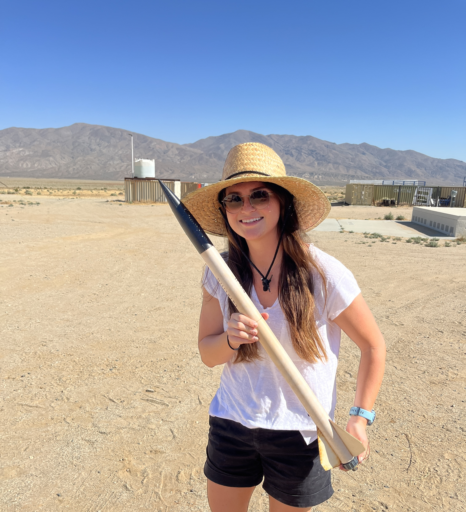
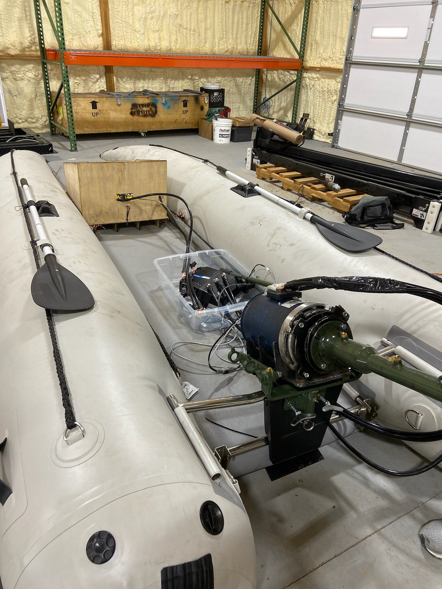
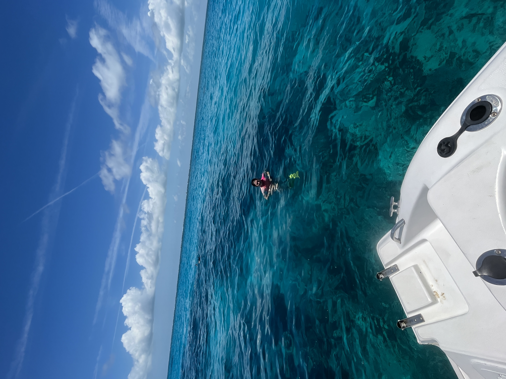
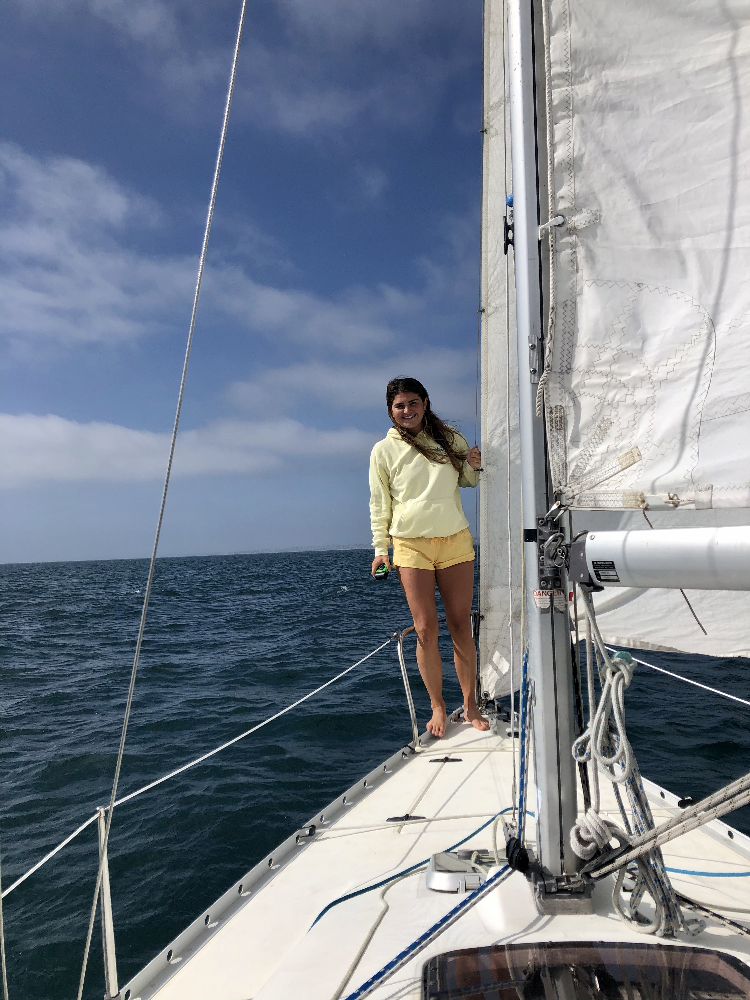

Launching model rockets in the Mojave Desert

Capstone Project, built electrically powered boat

Build process for electrically powered boat (PEP comptetion)

Diving in Marathon, Florida

Sailing to Catalina Island

Surfing in Costa Rica
ABOUT ME
I am a graduate student at the University of Florida currently pursuing a master’s degree in electrical and computer Engineering. I am interested in machine learning and more specifically computer vision applications. Throughout my studies and internship experiences, I have also gained experience with various hardware elements, I especially enjoy it when I get to work with both hardware and software. I am California born and raised which has given me great appreciation for all things nature. I currently live in Florida and I anything related to the ocean, especially sailing, surfing and diving.
Skills
Experience
Education
- Programming Languages
Python, MATlab, Java, Arduino, HTML, CSS, Simulink - Machine Learning
TensorFlow, PyTorch, Sci-Kit Learn, Computer Vision Techniques, CNN architecture - CAD Modeling
Fusion 360, Creo Parametric, Solid Works, PLA and ABS 3D printing - Electrical Engineering
Cadance, Hardware Testing, Arduino - Robotics
ROS, Turtlebot - Operating Systems
Linux, Windows, MAC OS, Ubuntu - Other
CPR, Sailing (bareboat skipper and radio operator)
- Machine Learning Intern
The Aerospace Corporation, Data Science Department (June 2023 - Aug 2023). Utilized NLP services to help implement a topic modeling script using BERTopic. - Electromechanical Controls Intern
The Aerospace Corporation, (June 2023 - Aug 2023). Performed verification testing on GPS User Equipment, including signal integrity, continuity, crosstalf and RF testing. - Computer Vision and AI Research Assistant
University of Florida, (Aug 2022 - Dec 2022). Helped with various compter vision projects as well as underwater robotic deployments. - Electromechanical Controls Intern
The Aerospace Corporation, (June 2022 - Aug 2022). Utilized various lab equipment to test scale factor and bias on an IMU, I utilized various programming languages to understand and anlayze data. - Vechical Shock and Vibration Intern
The Aerospace Corporation, (June 2021 - Aug 2021). Used various spectral analysis techniques to perform analysis, performed in house hardware testing using a modal shaker and PAF model. Created FEA model to analyze and compare results.
- B.S. Engineering
Wake Forest University, May 2022 - M.S. Electrical and Computer Engineering
University of Florida, May 2024